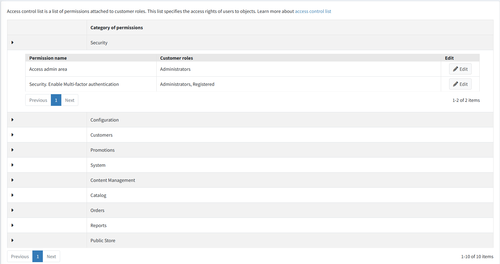
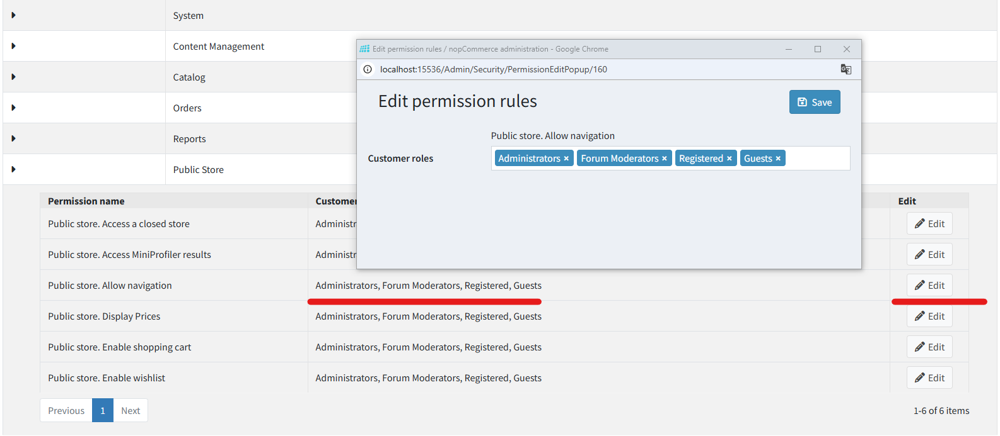

存取控制清單
存取控制清單 (ACL) 用於限制或授予使用者存取網站特定區域的權限。此清單由管理員進行管理。因此，使用者必須擁有管理員權限才能存取此功能。存取控制清單具有以下特性：
- 存取控制清單是基於角色的，也就是說，它管理如 Global administrators、Content managers 等角色。這些角色清單可在 顧客 → 顧客角色 頁面進行管理。詳細資訊請參考 顧客角色。
- 存取控制清單出現在管理後台。請確保使用者必須是管理員才能存取 ACL。
- 系統中預設了一些管理員動作，包括 Manage orders（管理訂單）、Manage customers（管理顧客）等更多項目。
若要管理存取控制清單，請前往 設定 → 存取控制清單。此時將會顯示 Access control list 視窗：

點擊 Edit（編輯），並在 Permission（權限）項目旁勾選所需的角色。被選取的角色將獲得對應動作的存取權。

點擊 Save（儲存）。
Tip
範例：我們需要一個名為 Content manager（內容管理員）的角色。Content manager 必須擁有管理新商品和製造商、編輯網站評論、部落格、行銷活動的權限，但不能存取購物車。 執行步驟如下：
- 在 顧客 → 顧客角色 頁面建立一個名為 Content manager 的 顧客角色。
- 在存取控制清單中，為下列權限勾選所需的顧客角色：Access Admin Area、Admin Area. Manage Blog、Admin Area. Manage Campaigns、Admin Area. Manage Forums、Admin Area. Manage News、Admin Area. Manage Newsletter Subscribers、Public Store. Allow Navigation、Public Store. Display Prices。
- 儲存變更。